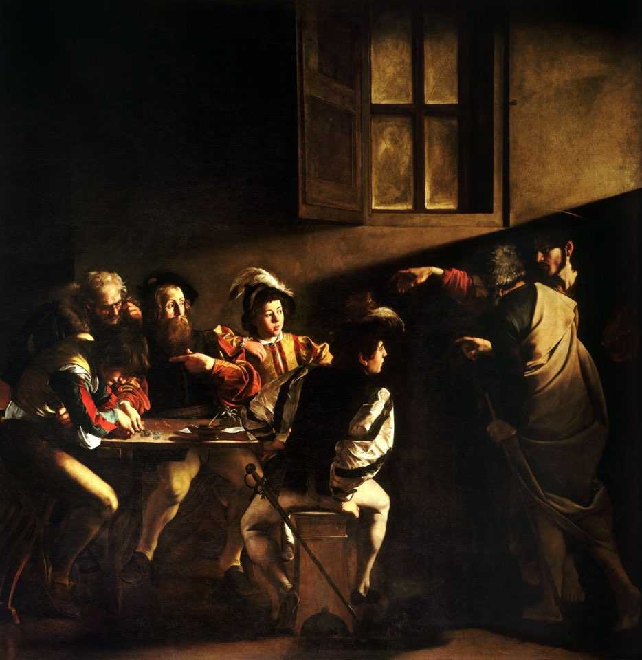
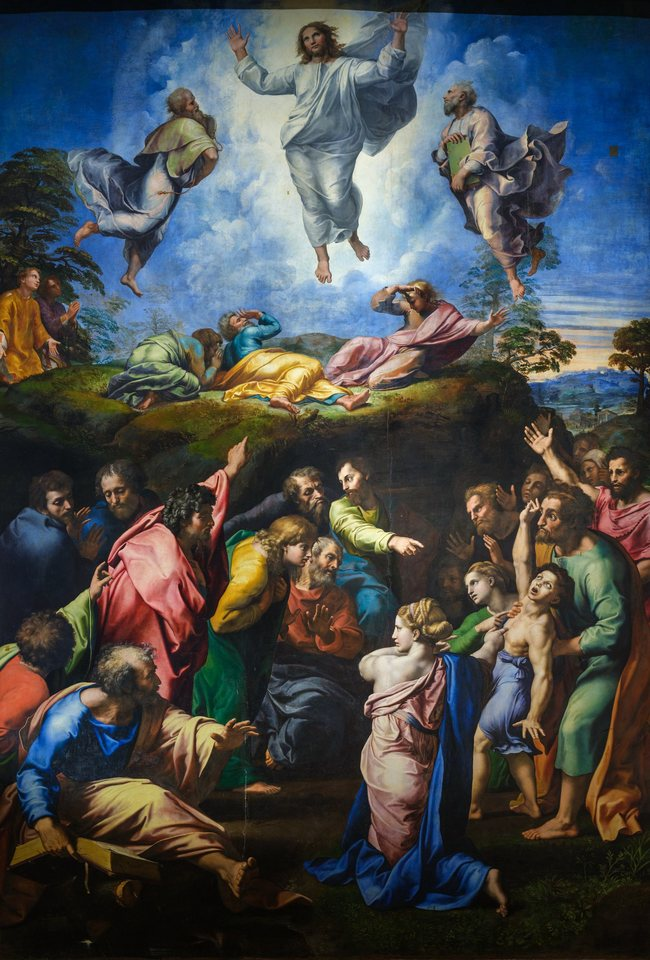
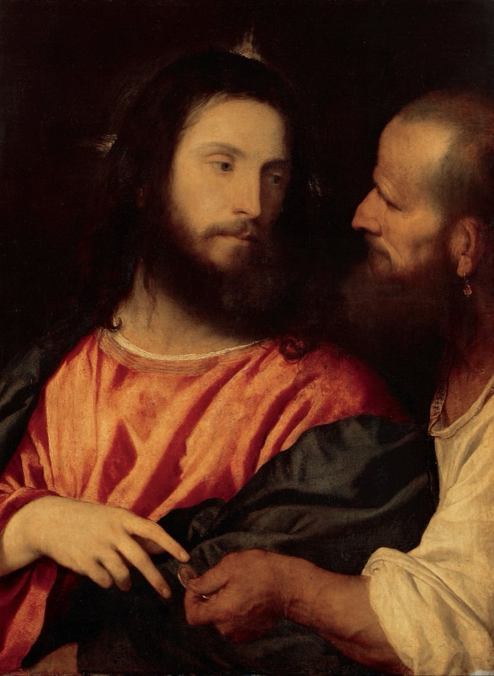
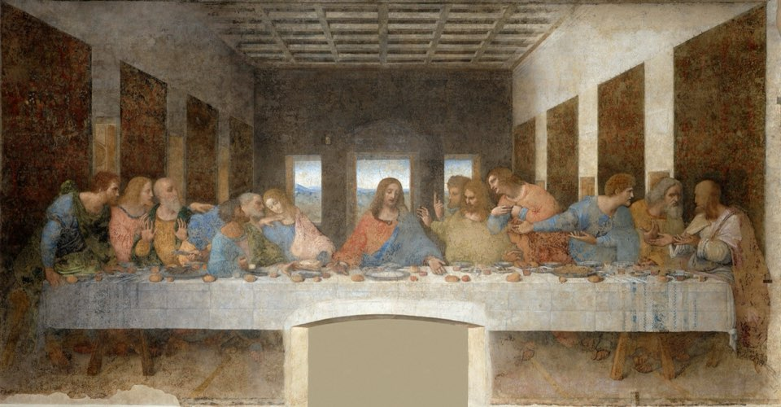
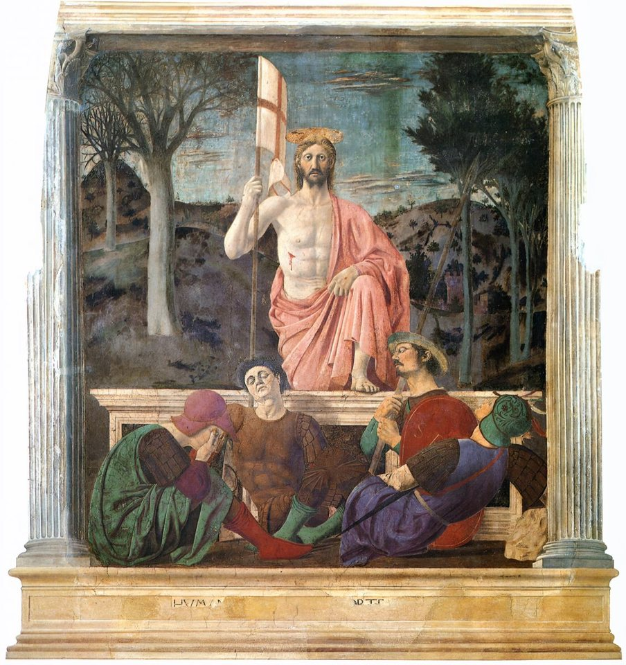

This walk follows Jesus of Nazareth through his life as a story, in seven acts and some sixty scenes. Each scene names the Gospels that tell it, gives a line or two of their own words, and points to other witnesses in the archive, from Josephus and Tacitus to inscriptions in stone, where they bear on the event.
The anchors are few and firm. Jesus was born c. 6–4 BC, before the death of Herod the Great; his ministry began c. AD 28–29, in the fifteenth year of Tiberius; and he was crucified under Pontius Pilate, c. AD 30 or 33. Within those bounds the Gospels sometimes order episodes differently, and the sequence here is one reasonable path the reader can weigh against the texts.

The Coming
An angel’s message in Nazareth, a birth in Bethlehem in the last years of Herod the Great, and a family driven into exile.
-
c. 7–5 BC
The annunciation to Mary
NazarethIn Nazareth, a village in Galilee, the angel Gabriel comes to Mary, a young woman betrothed to Joseph. He tells her she will conceive by the Holy Spirit and bear a son to be named Jesus, heir to the throne of David. Mary answers that she is the Lord’s servant.
Behold, you will conceive in your womb and give birth to a son, and shall name him ‘Jesus.’Luke 1:31
Read itLuke 1:26–38Other witnessesQur’an 19: the chapter of Mary -
c. 7–5 BC
Joseph’s dream
Joseph learns that Mary is pregnant and resolves to end the betrothal quietly. An angel tells him in a dream to take her as his wife and to name the child Jesus. Matthew links the birth to Isaiah’s sign of a child called Emmanuel, “God with us.”
Read itMatthew 1:18–25 -
c. 6–4 BC
The birth in Bethlehem
BethlehemLuke tells of a census that brings Joseph and Mary from Nazareth to Bethlehem, the town of David, where Mary gives birth and lays the child in a feeding trough because there is no room in the inn. Matthew too places the birth in Bethlehem in the days of King Herod. Neither Gospel gives a day or month; December 25 is a later liturgical date.
Other witnessesInfancy Gospel of James -
c. 6–4 BC
The shepherds and the angels
BethlehemShepherds keeping watch by night near Bethlehem see an angel and hear a multitude of the heavenly host praising God. They hurry to find the child in the manger and spread the news of what they were told.
For there is born to you today, in David’s city, a Savior, who is Christ the Lord.Luke 2:11
Read itLuke 2:8–20 -
c. 6–4 BC
The presentation in the Temple
JerusalemOn the eighth day the child is circumcised and named Jesus. His parents later bring him to the Temple in Jerusalem, where the aged Simeon takes him in his arms and praises God, and the prophetess Anna speaks of him to all awaiting redemption.
Read itLuke 2:21–38 -
c. 6–4 BC
The wise men from the east
BethlehemWise men, or magi, follow a star to Jerusalem asking for the newborn king of the Jews, alarming Herod the Great, the Roman-backed king of Judea. Directed to Bethlehem, they find the child with Mary and offer gold, frankincense and myrrh. Matthew does not call them kings, number them or name them.
Where is he who is born King of the Jews? For we saw his star in the east, and have come to worship him.Matthew 2:2
Read itMatthew 2:1–12 -
c. 6–4 BC
Flight into Egypt and return to Nazareth
NazarethWarned in a dream, Joseph takes the child and his mother to Egypt, and Herod orders the killing of Bethlehem’s boys aged two and under. After Herod’s death the family returns and, avoiding his son Archelaus in Judea, settles in Nazareth. Luke, for his part, simply has the family go home to Nazareth after the Temple visit.
Nazareth and the Jordan
Long quiet years in a Galilean village, then a prophet at the Jordan, a baptism, a wilderness testing and the first followers.
-
c. AD 6–8
The boy in the Temple
JerusalemAt twelve, Jesus goes up to Jerusalem with his parents for Passover and stays behind. After three days they find him in the Temple, listening to the teachers and asking questions. He returns with them to Nazareth and grows in wisdom and stature.
Why were you looking for me? Didn’t you know that I must be in my Father’s house?Luke 2:49
Read itLuke 2:41–52 -
c. AD 28–29
John the Baptist in the wilderness
Jordan RiverIn the fifteenth year of the emperor Tiberius, John, son of the priest Zechariah, appears in the wilderness by the Jordan calling Israel to repentance and baptizing. Crowds come out to him, and he announces one coming after him who is mightier. Josephus, the first-century Jewish historian, also remembers John as a good man who baptized and was put to death by Herod Antipas.
Other witnessesJosephus on Jesus (Testimonium) -
c. AD 28–29
The baptism of Jesus
Jordan RiverJesus comes from Nazareth and is baptized by John in the Jordan. As he comes up from the water the Spirit descends on him like a dove, and a voice from heaven names him the beloved Son. Luke notes that he was about thirty years old.
You are my beloved Son, in whom I am well pleased.Mark 1:11
-
c. AD 28–29
Forty days in the wilderness
The Spirit drives Jesus into the wilderness, where he fasts forty days and is tested by Satan. In Matthew and Luke he answers each temptation, to turn stones into bread, to test God and to grasp at the kingdoms of the world, with words of Scripture.
-
c. AD 28–29
The Lamb of God and the first disciples
In John’s Gospel the Baptist points Jesus out as the Lamb of God, and two of John’s own disciples follow him. One, Andrew, brings his brother Simon, whom Jesus names Cephas, “rock”; Philip brings Nathanael, who doubts that anything good can come from Nazareth.
Nathanael said to him, “Can any good thing come out of Nazareth?” Philip said to him, “Come and see.”John 1:46
Read itJohn 1:35–51 -
c. AD 28–29
Water into wine at Cana
At a wedding in Cana of Galilee the wine runs out, and Jesus’s mother tells the servants to do whatever he says. He has six stone water jars filled, and the steward tastes wine better than what came before. John calls it the first of his signs.
Read itJohn 2:1–11

The Kingdom in Galilee
After John’s arrest Jesus announces the kingdom of God in the towns around the Sea of Galilee, calls fishermen and a tax collector, and teaches on a mountain.
-
c. AD 28–30
The sermon at Nazareth
NazarethBack in his home synagogue, Jesus reads from the scroll of Isaiah: the Spirit of the Lord has anointed him to bring good news to the poor and freedom to captives. He declares the words fulfilled that day, and admiration turns to fury when he recalls the prophets Elijah and Elisha helping foreigners. Mark and Matthew place a hometown rejection later in the ministry.
Today, this Scripture has been fulfilled in your hearing.Luke 4:21
Read itLuke 4:16–30Other witnessesThe Great Isaiah Scroll -
c. AD 28–30
Fishers of men
Sea of GalileeWalking by the Sea of Galilee, Jesus calls two pairs of brothers at their nets, Simon and Andrew, James and John, the sons of Zebedee. They leave their boats and follow him. Luke sets Simon’s call after a night of empty nets and a sudden great catch.
Come after me, and I will make you into fishers for men.Mark 1:17
-
c. AD 28–30
A Sabbath in Capernaum
CapernaumIn the synagogue at Capernaum, the lakeside town that becomes his base, Jesus teaches with authority and drives out an unclean spirit. He goes to Simon’s house and lifts Simon’s mother-in-law from her fever, and at sunset the whole town gathers at the door with its sick.
-
c. AD 28–30
The paralysed man let down through the roof
CapernaumSo many crowd the house that four friends dig through the roof and lower a paralysed man to Jesus. He tells the man his sins are forgiven, and when scribes object that only God can forgive, he tells him to rise, take his mat and walk home.
-
c. AD 28–30
The call of Levi
CapernaumJesus calls a tax collector from his booth, named Matthew in the first Gospel and Levi in Mark and Luke, and he gets up and follows. At the meal that follows Jesus eats with tax collectors and sinners, and answers his critics that the sick, not the healthy, need a physician.
Those who are healthy have no need for a physician, but those who are sick.Mark 2:17
-
c. AD 28–30
The choosing of the Twelve
After a night of prayer on a mountain, Jesus chooses twelve from among his followers to be with him and to be sent out to preach. The lists name Simon Peter, Andrew, James, John, Philip, Bartholomew, Matthew, Thomas and others, ending with Judas Iscariot, who would betray him. Paul already speaks of “the Twelve” in the 50s.
Other witnesses1 Corinthians: the early creed -
c. AD 28–30
The Sermon on the Mount
Sea of GalileeSeated on a hillside, Jesus teaches the blessings on the poor in spirit and the merciful, love of enemies, prayer to the Father in secret, and trust instead of anxiety, ending with the house built on rock. Luke gives a shorter related sermon on a level place.
Blessed are the poor in spirit, for theirs is the Kingdom of Heaven.Matthew 5:3

Parables and Signs
Stories of seed and harvest, a storm stilled, a girl raised, a crowd fed, and on a mountain a disciple’s confession and a vision of glory.
-
Galilean ministry
The parable of the sower
Sea of GalileeTeaching from a boat to a crowd on the shore, Jesus tells of seed falling on the path, on rock, among thorns and on good soil. Privately he explains it as the different ways people receive the word. It opens a chain of parables about the kingdom: the mustard seed, the leaven, the hidden treasure.
-
Galilean ministry
The storm on the lake
Sea of GalileeCrossing the lake at evening, the boat is swamped by a violent squall while Jesus sleeps on a cushion. The disciples wake him; he rebukes the wind and the sea becomes calm, and they ask one another who this is.
Who then is this, that even the wind and the sea obey him?Mark 4:41
-
Galilean ministry
Jairus’s daughter and the woman who touched his cloak
Jairus, a synagogue leader, begs Jesus to come to his dying daughter. On the way a woman who has bled for twelve years touches his cloak and is healed. Word comes that the girl has died, but Jesus takes her by the hand and she rises.
Taking the child by the hand, he said to her, “Talitha cumi!” which means, being interpreted, “Girl, I tell you, get up!”Mark 5:41
-
c. AD 29–32
The death of John the Baptist
MachaerusJohn has rebuked Herod Antipas, ruler of Galilee, for marrying his brother’s wife Herodias, and is imprisoned. At a birthday banquet Herodias’s daughter dances, and at her mother’s prompting asks for John’s head. Josephus places John’s imprisonment and death at the fortress of Machaerus and gives Herod’s fear of his influence as the motive.
Other witnessesJosephus on Jesus (Testimonium) -
Near Passover (John 6:4)
The feeding of the five thousand
Sea of GalileeA great crowd follows Jesus to a remote place by the lake. With five loaves and two fish he gives thanks, breaks the bread and has the disciples distribute it; all eat their fill and twelve baskets of fragments remain. It is the one miracle told in all four Gospels.
-
Galilean ministry
Walking on the water
Sea of GalileeThat night the disciples row against the wind, and Jesus comes to them walking on the sea. They cry out in fear, thinking him a ghost. In Matthew, Peter steps out to meet him, begins to sink and is caught by the hand.
-
Galilean ministry
Peter’s confession
Near Caesarea Philippi, in the far north, Jesus asks who people say he is, and then who the disciples say he is. Peter answers that he is the Christ, the Messiah. Jesus then begins to teach that the Son of Man must suffer, be killed and rise again.
Simon Peter answered, “You are the Christ, the Son of the living God.”Matthew 16:16
-
Galilean ministry
The transfiguration
Jesus takes Peter, James and John up a high mountain, and there he is changed before them, his clothes shining white. Moses and Elijah appear talking with him, a cloud overshadows them, and a voice speaks from it.
This is my beloved Son. Listen to him.Mark 9:7

The Road to Jerusalem
Jesus sets his face toward Jerusalem, teaching in parables along the way, and at Bethany calls a dead friend from the tomb.
-
On the journey
The good Samaritan
Luke has Jesus turn resolutely toward Jerusalem and teach as he travels. When a lawyer asks who counts as his neighbour, Jesus tells of a man beaten by robbers, passed by a priest and a Levite, and rescued by a Samaritan, a member of a people many Jews regarded as outsiders.
He said, “He who showed mercy on him.” Then Jesus said to him, “Go and do likewise.”Luke 10:37
Read itLuke 10:25–37 -
On the journey
Martha and Mary
BethanyJesus is welcomed by two sisters. Martha is busy with serving while Mary sits at his feet listening, and when Martha complains, Jesus says Mary has chosen the good part. Luke does not name the village; John places sisters of these names at Bethany, near Jerusalem.
Read itLuke 10:38–42 -
On the journey
The lost sheep, the lost coin and the two sons
Criticised for eating with sinners, Jesus tells three stories of things lost and found: a sheep, a coin, and a younger son who squanders his inheritance and comes home to a father who runs to embrace him. The elder brother’s resentment closes the story with a question left open.
for this, my son, was dead and is alive again. He was lost and is found.Luke 15:24
Read itLuke 15:1–32 -
Festival of Booths or after
The man born blind
JerusalemIn Jerusalem Jesus makes mud, spreads it on the eyes of a man blind from birth, and sends him to wash in the pool of Siloam. The man comes back seeing, and under questioning by the Pharisees holds to what he knows.
Read itJohn 9:1–41 -
Before the last Passover
The raising of Lazarus
BethanyWord comes that Lazarus of Bethany, brother of Martha and Mary, is ill. Jesus arrives to find him four days in the tomb; he weeps, has the stone rolled away and calls Lazarus out, and the dead man comes out still bound in grave cloths. John makes this the last and greatest of the signs.
I am the resurrection and the life. He who believes in me will still live, even if he dies.John 11:25
Read itJohn 11:1–44 -
Before the last Passover
The council’s decision
JerusalemAlarmed at the following Jesus is gathering, the chief priests and Pharisees meet in council. Caiaphas, high priest that year, argues that it is better for one man to die for the people than for the whole nation to perish. From that day they plan his death, and Jesus withdraws to a town called Ephraim.
it is advantageous for us that one man should die for the people, and that the whole nation not perish.John 11:50
Read itJohn 11:45–57Other witnessesOssuary of “Joseph son of Caiaphas”

The Final Week
A royal entry, a disturbance in the Temple, a last meal with his friends, betrayal by night, trials before priests and the Roman governor, and a cross outside the city.
-
Passover, c. AD 30 or 33
The anointing at Bethany
BethanyAt a dinner in Bethany a woman breaks a jar of costly ointment and pours it over Jesus. Some protest at the waste; Jesus says she has prepared his body for burial. John names her as Mary, sister of Lazarus, and has Judas object.
-
Passover, c. AD 30 or 33
The entry into Jerusalem
JerusalemJesus rides into Jerusalem on a young donkey as the crowds spread cloaks and branches on the road and shout Hosanna. Matthew and John see in it the prophet Zechariah’s picture of a humble king coming to Zion.
Hosanna! Blessed is he who comes in the name of the Lord!Mark 11:9
-
Passover, c. AD 30 or 33
The cleansing of the Temple
JerusalemIn the Temple courts Jesus drives out those buying and selling and overturns the money changers’ tables, quoting Isaiah and Jeremiah. The chief priests and scribes begin seeking a way to destroy him. John tells a similar scene at the start of the ministry.
-
Passover, c. AD 30 or 33
The Last Supper
JerusalemOn his last night Jesus shares a meal with the Twelve. He takes bread, gives thanks, breaks it and calls it his body, and takes the cup as the new covenant in his blood; he also foretells that one of them will betray him. Paul hands on the same words to the Corinthians in the 50s.
This is my body which is given for you. Do this in memory of me.Luke 22:19
Other witnesses1 Corinthians: the early creed -
Passover, c. AD 30 or 33
The washing of the disciples’ feet
JerusalemIn John’s account of the meal, Jesus rises from the table, ties a towel around himself and washes his disciples’ feet, overruling Peter’s protest. He gives them a new commandment, to love one another as he has loved them, and speaks at length of the Spirit to come.
Read itJohn 13:1–35 -
Passover, c. AD 30 or 33
Gethsemane
JerusalemOn the Mount of Olives, in a place called Gethsemane, Jesus prays in anguish that the cup might pass from him, while Peter, James and John fall asleep. He yields himself to the Father’s will.
Abba, Father, all things are possible to you. Please remove this cup from me. However, not what I desire, but what you desire.Mark 14:36
-
Passover, c. AD 30 or 33
The arrest
JerusalemJudas Iscariot arrives with an armed crowd from the chief priests and identifies Jesus with a kiss. A disciple, named in John as Peter, cuts off the ear of the high priest’s servant, Malchus. The disciples flee.
-
Passover, c. AD 30 or 33
Before Annas and Caiaphas
JerusalemJesus is taken first, in John, to Annas, the former high priest, and then to his son-in-law Caiaphas, the serving high priest. Before the council witnesses disagree, until the high priest asks him directly whether he is the Christ. His answer is condemned as blasphemy.
-
Passover, c. AD 30 or 33
Peter’s denial
JerusalemWarming himself in the high priest’s courtyard, Peter is recognised as one of Jesus’s followers and three times denies knowing him. The rooster crows, Peter remembers what Jesus had said, and weeps.
-
Passover, c. AD 30 or 33
Before Pontius Pilate
JerusalemAt daybreak Jesus is handed over to Pontius Pilate, the Roman prefect of Judea from AD 26 to 36. Pilate asks whether he is the king of the Jews; in John, Jesus answers that he has come to testify to the truth. A stone found at Caesarea Maritima in 1961 bears Pilate’s name and title.
Pilate said to him, “What is truth?”John 18:38
-
Passover, c. AD 30 or 33
Before Herod Antipas
JerusalemLearning that Jesus is a Galilean, Pilate sends him to Herod Antipas, ruler of Galilee, who is in Jerusalem for the feast. Herod hopes to see a miracle, but Jesus gives him no answer, and Herod’s soldiers mock him and send him back in a splendid robe.
Read itLuke 23:6–12 -
Passover, c. AD 30 or 33
Barabbas, the scourging and the sentence
JerusalemPilate offers to release a prisoner for the feast, and the crowd chooses Barabbas. Jesus is flogged, crowned with thorns and mocked by the soldiers as king, and Pilate hands him over to be crucified.
Jesus therefore came out, wearing the crown of thorns and the purple garment. Pilate said to them, “Behold, the man!”John 19:5
-
Passover, c. AD 30 or 33
The crucifixion
JerusalemSimon of Cyrene is made to carry the cross to Golgotha, “the place of a skull,” outside the city, where Jesus is crucified between two others under the charge “King of the Jews.” Soldiers divide his clothes, passers-by mock him, and in Luke one of the men crucified with him asks to be remembered. The Roman historian Tacitus records that Christ was executed under Tiberius by the procurator Pontius Pilate.
Lord, remember me when you come into your Kingdom.” Jesus said to him, “Assuredly I tell you, today you will be with me in Paradise.Luke 23:42–43
-
Passover, c. AD 30 or 33
The death of Jesus
JerusalemDarkness covers the land from noon until three in the afternoon. Jesus cries out the opening words of Psalm 22 and breathes his last; the Temple curtain is torn in two, and the centurion standing opposite confesses him. In John his last word is “It is finished.”
Truly this man was the Son of God!Mark 15:39
Other witnessesAfricanus on Thallus and Phlegon -
Passover, c. AD 30 or 33
The burial
JerusalemJoseph of Arimathea, a respected council member, asks Pilate for the body. He wraps it in linen and lays it in a tomb cut from rock, and a stone is rolled across the entrance; John adds that Nicodemus brought spices. Mary Magdalene and other women watch where he is laid.

The Risen Lord
An empty tomb at dawn, then meetings with the risen Jesus in a garden, on a road, in a locked room and by the lake, until his ascension and the gift of the Spirit.
-
Sunday dawn
The women at the empty tomb
JerusalemEarly on the first day of the week Mary Magdalene and other women come to the tomb with spices and find the stone rolled away. A young man in white, or angels, tell them Jesus has risen. Mary Magdalene is named in every account; in John, Peter and another disciple run to see the empty grave cloths.
You seek Jesus, the Nazarene, who has been crucified. He has risen! He is not here.Mark 16:6
-
Sunday
Mary Magdalene in the garden
JerusalemWeeping outside the tomb, Mary Magdalene sees a man she takes for the gardener. He speaks her name, she recognises Jesus, and he sends her to tell the disciples. Matthew has Jesus meet the women as they hurry from the tomb.
Jesus said to her, “Mary.” She turned and said to him, “Rabboni!” which is to say, “Teacher!”John 20:16
-
Sunday
The road to Emmaus
EmmausTwo disciples, one named Cleopas, are walking to the village of Emmaus when a stranger joins them and explains the Scriptures. At supper he breaks the bread and they recognise Jesus, who vanishes. Hurrying back to Jerusalem, they hear that the Lord has appeared to Simon.
Weren’t our hearts burning within us while he spoke to us along the way, and while he opened the Scriptures to us?Luke 24:32
Read itLuke 24:13–35 -
Sunday evening
Among the disciples in Jerusalem
JerusalemThat evening Jesus stands among the disciples behind closed doors and greets them with peace. In Luke he shows his hands and feet and eats fish before them; in John he breathes on them and says, “Receive the Holy Spirit.”
-
A week later
Thomas
JerusalemThomas, one of the Twelve, was absent and refuses to believe without seeing the wounds. Eight days later Jesus appears again and invites him to look and touch, and Thomas answers with the Gospel’s fullest confession.
Thomas answered him, “My Lord and my God!” Jesus said to him, “Because you have seen me, you have believed. Blessed are those who have not seen and have believed.”John 20:28–29
Read itJohn 20:24–29 -
The third day and after
Breakfast by the lake
Sea of GalileeBack in Galilee, seven disciples fish all night and catch nothing. At dawn a figure on the shore tells them where to cast the net, and it fills with 153 fish; Jesus has a fire ready with bread and fish. Three times he asks Peter whether he loves him, and three times charges him to feed his sheep.
Read itJohn 21:1–23 -
The third day and after
The commission on the mountain
The eleven disciples go to a mountain in Galilee as Jesus had told them. Some worship and some doubt. He sends them to make disciples of all nations, baptizing and teaching, and promises to be with them always.
Go and make disciples of all nations … Behold, I am with you always, even to the end of the age.Matthew 28:19–20
Read itMatthew 28:16–20 -
The third day and after
Cephas, the five hundred and James
Writing to Corinth around AD 54, Paul hands on a list he had himself received: Jesus appeared to Cephas, that is Peter, to the Twelve, to more than five hundred at once, most of them still living, then to James, then to all the apostles, and last to Paul. This James is the brother of the Lord whom Paul met in Jerusalem and whose death Josephus records in AD 62.
Then he appeared to over five hundred brothers at once, most of whom remain until now, but some have also fallen asleep. Then he appeared to James1 Corinthians 15:6–7
Read it1 Corinthians 15:3–8 -
Forty days after (Acts 1:3)
The ascension
BethanyLuke ends his Gospel with Jesus leading the disciples out as far as Bethany, blessing them and being carried up into heaven. In Acts, his second volume, Luke tells of forty days of appearances, then Jesus taken up in a cloud from the Mount of Olives, with the promise that he will return.
Other witnessesActs: the first Christian communities -
Fifty days after Passover
Pentecost
JerusalemAt the feast of Pentecost the disciples are gathered in one place when a sound like a rushing wind fills the house and tongues as of fire rest on each of them. Peter stands before the crowds in Jerusalem and proclaims the crucified Jesus raised and exalted, and the church’s mission begins.
Read itActs 2:1–41Other witnessesActs: the first Christian communities